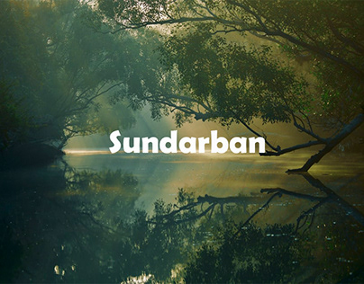
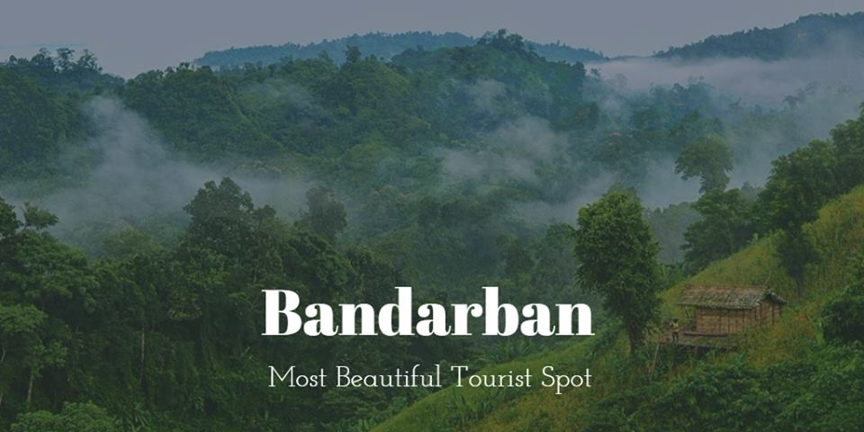

SUNDARBAN
World's largest mangrove forest
Sundarbans is the biggest natural mangrove forest in the world, located between
Bangladesh and India.
The most beautiful part of the Sundarbans consists in Bangladesh and it is 60%. It is the deepest
with the different types of geological period and fauna. If you want to get a true experience of the
mangrove forest, you must visit the Bangladesh side of the Sundarbans.

COX'S BAZAR
World's Longest Beach
Though the beach is considered to be the longest beach in the world, it has been
the least crowded
among the other beaches. Here, visitors can enjoy the relaxing breeze of the Bay of Bengal Sea and
the peacefulness of the place. The Cox’s bazar beach certainly has the finest leisure it can offer
to each of its visitors.

BANDARBAN
A great spot for hill lovers
There are lots of tourist spot available in Bandarban. In the tourist’s spots of
Bandarban which
includes Boga Lake, Buddha Dhatu Jadi, Chimbuk Hill and Tribal Villages, Keokradong, Nilachal
Tourist Spot, Nilgiri and Tanchi, Tajingdong etc. A wide range of places is there in Bandarban
filled with nature’s best elements.